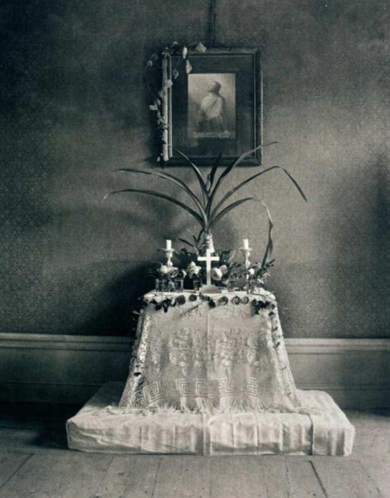

Origen y formación
Hilma af Klint nació en Solna (Suecia) en 1862 y fue una artista y mística cuyas pinturas figuran entre las primeras obras abstractas importantes del arte occidental, anteriores a las de Kandinsky, Malévich y Mondrian.
Estudió en la Real Academia de Bellas Artes de Estocolmo y, tras graduarse en su taller de la capital, comenzó con paisajes, retratos y estudios figurativos de botánica y animales ligados a su interés por la ciencia.

Espiritismo, Las Cinco y Pinturas para el templo
En un contexto de descubrimientos como los rayos X y las ondas de radio, el espiritismo y la teosofía, impulsada por Helena Petrovna Blavatsky, reunió a cuatro amigas en el grupo Las Cinco para invocar a «los Altos» mediante sesiones, en una práctica afín al automatismo surrealista.
A partir de 1904, tras los mensajes atribuidos a su guía espiritual Amaliel, creó entre 1906 y 1915 casi doscientas obras agrupadas como Pinturas para el templo, entendiendo su propio gesto como canal de fuerzas y mensajes más allá de lo visible.

El reconocimiento tardío
Falleció en 1944, el mismo año que Mondrian y Kandinsky, sin haber expuesto su obra en vida y con la indicación de esperar veinte años para mostrar sus mil trescientas pinturas y ciento veinticinco cuadernos. Su primera exhibición relevante llegó en 1986 en Los Ángeles, y su reconocimiento pleno es mucho más reciente.